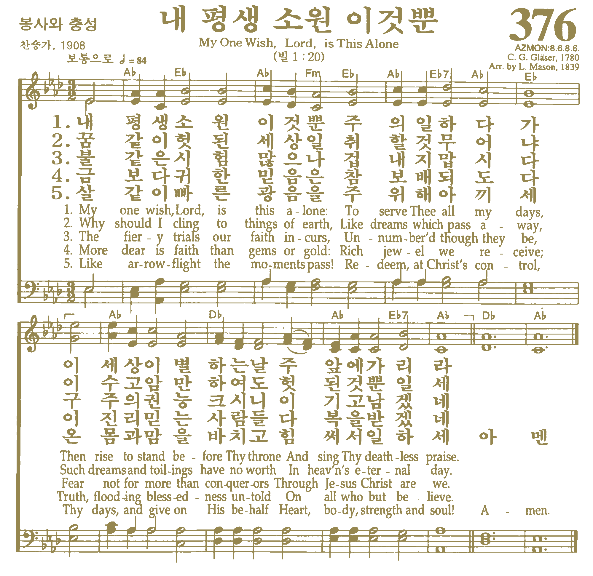
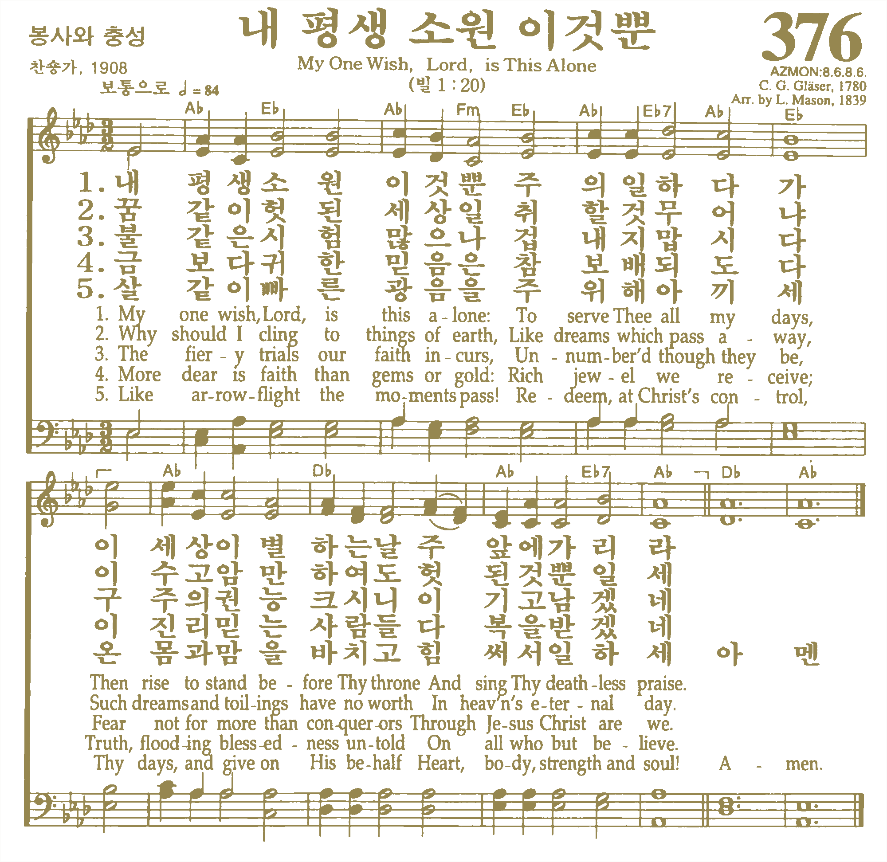

This story starts from my family’s tradition.
My great-grandfather, Gyu Shin Lee, passed away on Christmas Eve, and since then my family gathers at home every Christmas Eve to share memories, eulogies, and celebrate his legacy through Christian memorial service. My grandfather, Jhong Soo Lee, brings his parents’ portrait, my great-grandfather’s hand-calligraphed Lee family’s heirloom book, a Korean traditional genealogy book called Jokbo, and his diary. There is an old Korean proverb, “A tiger dies and leaves his skin; a man dies and leaves his name.” These objects endured through turbulent times and, as part of the fourth generation of my family, I feel responsible to sustain his legacy by preserving our family values for later generations through printed and digital media with new interpretations of our family heirlooms.
The dialogue in the book was adapted from many years of recordings of these memorial services. This story preserves the narratives of an intergenerational Korean family and brings special bonds between multiple generations, giving a sense of belonging. Looking at my great-grandfather’s legacy, I ask myself — what do family and connection mean to me in this modern society, and how can I continue to archive, persevere, interpret, and recreate this legacy to establish my own identity?
Song of Praise
Jhong Soo: Let’s sing together my father’s favorite hymn, My One Wish, Lord, Is This Alone.
Father, Immigrant, And The Church Edler
Jhong Soo: I’ll tell you my father’s brief history. My father was born on June 20, 1894, in Seongju, Korea. Under Japanese colonial rule, we were forced to change our Korean name to Japanese and we couldn’t receive proper education because we were Korean. So my father decided to move to Japan because it was the only way we can get an education. I’m the youngest of four brothers, and I have three older brothers, Jongpil, Jonghae, and Jongdu. On March 24, 1928, my father moved to Kyoto, Japan with my three brothers at the age of 34. Seven years later, I was born in Kyoto.
My father worked something called katagaki day and night so that we could go to school. He took the velvet fabric from the factory and removed the wire stuck in the fabric with a knife.
Three years after I was born, my father became a Christian in 1936. My father was very interested in philosophy and always thought about how to live a valuable life. That’s why he studied Confucianism, history, and other philosophies. He met a pastor named Darai Jeon, and he eventually joined the church while studying Jesus to refute the pastor’s evangelism. In 1936, five years after my father joined a presbyterian church, he served the church devotedly and he became an elder at the church in 1941.
My oldest brother, Jongpil, was too old to go to school. My second brother, Jonghae, entered Kyoto Higashiyama Middle School and later entered Manchurian Medical College. It was such a big deal that it was published in the Korean Japanese newspaper. My family was so poor so we couldn’t pay his tuition. So Jonghae had to work and study at the same time. But he was diagnosed with tuberculosis while he was in school. After barely graduating from college, he returned to Korea. My father tried everything to save my brother but he couldn’t save him. My father thought if Jonghae became a doctor, we could get out of poverty and live comfortably. So when my brother died, my father was very devastated.
My birth mother died when I was five. In May 1939, she died of hepatitis at the age of 48. Then, in the middle of February 1944, my father decided to return to Korea with me. And a year later, on August 15, 1945, Japan was defeated in the Pacific War and Korea finally was liberated.
After returning to Korea, we lived in Seongju for five years and moved to Daegu in February 1949. We moved to Daegu because of me. I couldn’t go to school because I had to help my father with farming. My uncle worked as a chaplain at Gyesung Middle School in Daegu. He asked the principal of the school if I could be admitted. I was able to enter middle school three years late. My father helped me to study as much as I could.
Youngji Church
Jhong Soo: While in Daegu, my father established a church called Youngji Church. He worked in a herbal medicine shop during the day and led church construction with church members at night. We went to church together last November, right? I managed to see the church for the first time after I left Daegu. Soo Min took a picture of the headstone that existed when the church was first built. The church is now being demolished and rebuilt in a new place because of urban redevelopment.
My father died on December 24, 1968, when he was 74. The whole church family was preparing for a Christmas party, but it became a tearful Christmas.
Lee Family’s Heirloom
Jhong Soo: Today I brought a book that my father made. Before Gyeongju Lee’s genealogy book came out, my father made one himself. Look at this, kids. It says who my grandfather was and where he was buried after he died. Here, it says,
“After Japan surrendered to the United States at 11 a.m. on August 15, 1945, Joseon declared independence from Japan after 36 years, enabling Koreans to restore their Korean names.”
He wanted to pass this book down to his descendants. I want to keep it and deliver it to Won Woo, and Won Woo receives it and stores it, and then sends it to Sang Min and Sang Min again to his child.
Sang Hyun: This is really cool! What’s this book?
Jong Soo: This is a genealogy book. All the Gyeongju Lee clans are written in it.
Reunion After 74 Years
Jakyung: Dad, you once showed me his journal. Show it to the kids too.
Jhong Soo: It’s here. This diary has been to Japan once. In 1944, when my father came back to Korea, Jongdu, the third brother, was a middle school student. So he left him behind in Japan with his oldest brother Jongpil. Since leaving Japan, my father couldn’t see Jongdu until he had already died because Jongdu joined the pro-North Korea group Chongryon in Japan. So contacting Chongryon was forbidden in the 1960s and could get you penalized in South Korea. Although Jongdu graduated from Waseda University with political science degree, he couldn’t get hired because he was Korean. Eventually, he worked as a teacher at Chongryon Middle School. In the 1960s, we secretly exchanged letters and that’s how this diary was sent to him. I met him in Kyoto for the first time last year. Can you believe it’s our first reunion in 74 years?
After my father died, Jongdu missed him so much. Jongdu asked me to send all my father’s belongings to Japan. While reading my father’s diary, he corrected my father’s spelling and underlined impressive phrases in red. I heard he cried a lot while reading it.
When my father emigrated to Japan, he went with his brothers. But eventually, my father’s eldest brother’s family went to North Korea. Right after the Korean War, North Korea was better off. In the late 1950s, Chongryon conducted a campaign to persuade 93,000 Zainichi Koreans to migrate to North Korea. We’ve lost contact with him since then.
Thank you, God, for all your blessing to my family
Jakyung: Listen, I found this phrase:
"Dying is not very bitter, and it is my lifelong wish to go to the Lord, but one concern is that I’m worried about not being able to lead my son to the true faith.” I want him to follow in my footsteps, faithfully support the church, and support the family. Thank you, God, for the whole family is in peace."
I once read his diary, and at the end of each journal, he wrote a prayer request for his family. His spirit became a challenge to me. Kids, you should see this too.
Younghee: It’s a diary he wrote a few years before he died. It’s even hard for us to read this because he wrote in the old grammar and spelling system. It’s even harder for you guys to read it.
Won Woo: (Reading the diary) “The demonstration occurred today and the policeman came by.” Wow, this diary records the history and everything.
Jhong Soo: Soo Min, Sang Min, Sang Hyun, the reason why I talk about this every year is that you need to know our family’s roots and our Christian roots. I hope you deliver this spiritual legacy of my father to your descendants.
Jakyung: Dad, thank you for bringing these today.
Soo Min: (applauds)
Jhong Soo: Well now, let’s celebrate Christmas! Shall we sing Silent Night, Holy Night?